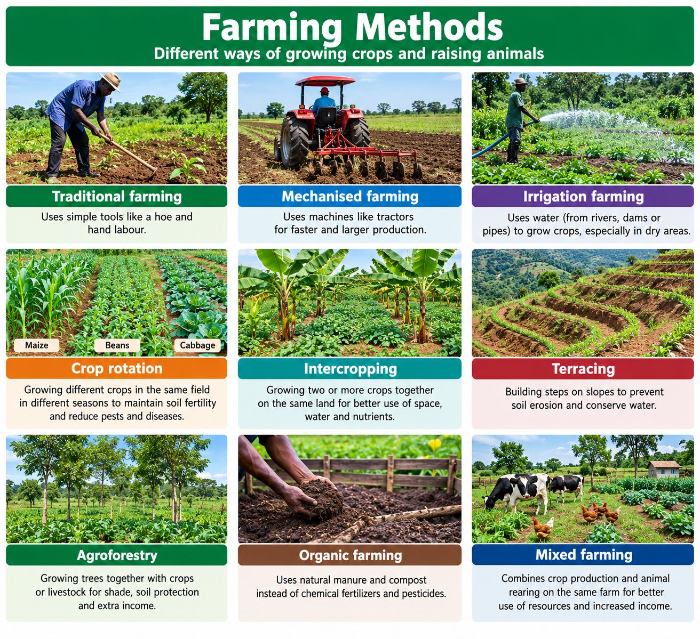

FARMING METHODS
FARMING METHODS
We have different types of farming methods
Types of farming methods
- Organic farming
- Mixed farming
- Subsistance farming
- Commercialfarming
- Irrigation farming

importance
Farmers choose method depending on their land,climate,resources and purpose.